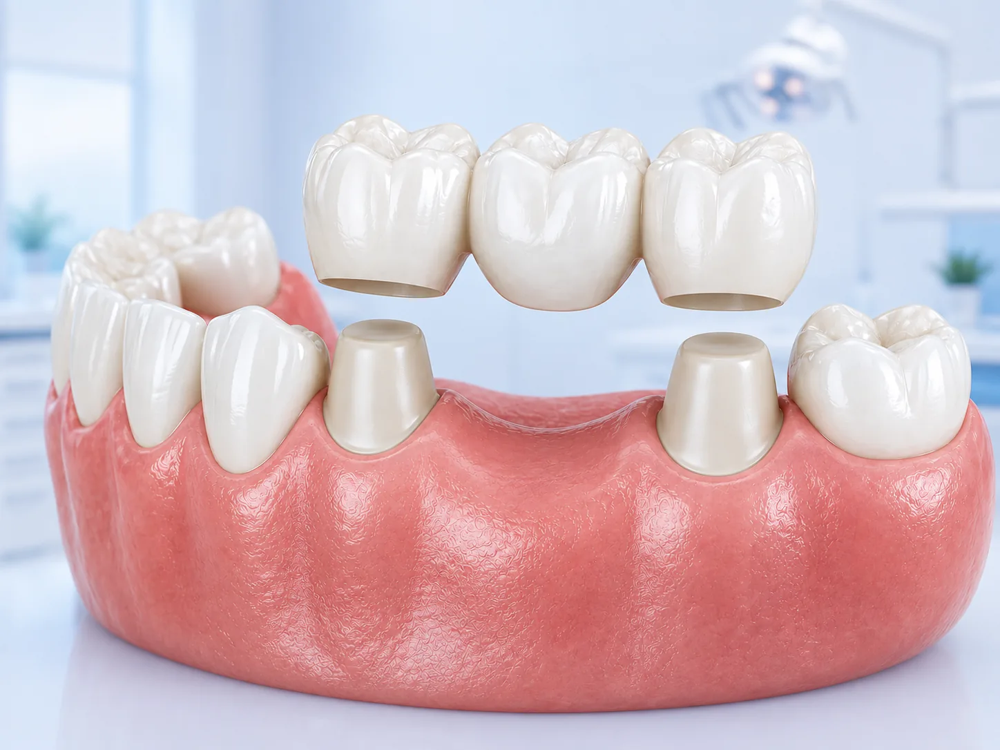

Crowns & Bridges
in Manikonda
Restore damaged teeth and replace missing ones with restorations built to match your smile.

Treatment Overview
A crown is a cap that covers a tooth that is cracked, heavily filled, worn down or root-canal treated. It restores the original shape and takes the chewing load off the weakened structure underneath.
A bridge replaces one or more missing teeth by anchoring a replacement tooth to the healthy teeth on either side of the gap. It is fixed in place — nothing to remove at night.
We use zirconia and layered ceramic for most cases. Both are metal-free, so there is no dark line at the gum and the shade stays stable over time.
Benefits
Ready to start your treatment?
Get treated by clinical experts in Manikonda using the most advanced and painless dental technology.
Approaches We Offer
We recommend the option that fits your case, not the most expensive one on the list.
Zirconia Crowns
Extremely strong and metal-free. Our default for back teeth and heavy bite cases.
Layered Ceramic Crowns
The most natural translucency, best suited to front teeth where appearance matters most.
Porcelain-Fused-to-Metal
A durable, more economical option where the crown will not be highly visible.
Fixed Bridges
Three-unit and longer spans anchored on prepared natural teeth or on implants.
No-cost EMI available
Spread the cost of major treatment over easy monthly instalments. Ask at the front desk for the current plans.
What to Expect, Step by Step
Examination
We assess whether the tooth can hold a crown, or whether a bridge or implant suits better.
Preparation & Scan
The tooth is shaped under anaesthesia and a digital impression is taken.
Temporary Fitted
You leave with a temporary crown so the tooth is protected and you can eat normally.
Final Cementation
The permanent restoration is checked for fit, bite and shade, then cemented in place.
Frequently Asked Questions
Can't find what you're looking for? Our team is here to help you understand your treatment process and options.
Contact UsBook your consultation today
Get treated by experienced dentists in Manikonda with advanced and painless dental care.